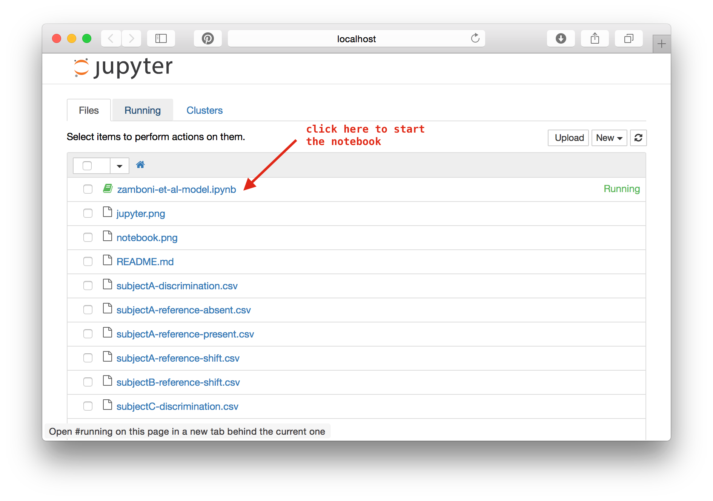

Zamboni-2016
Data and analysis code for Zamboni et al (2016) manuscript. "Do perceptual biases emerge early or late in visual processing?"
Zamboni-2016
Overview
Data and analysis code for Zamboni et al (2016) manuscript.
Do perceptual biases emerge early or late in visual processing?
Elisa Zamboni, Timothy Ledgeway, Paul V McGraw & Denis Schluppeck
School of Psychology, University of Nottingham University Park, Nottingham, NG7 2RD, UK
File description
Data files are provided as comma-separated files. The conventions for the data files included with this code are:
Discrimination data
subject[ID]-discrimination.csv
Each row contains data obtained at particular stimulus direction (data were pooled across a 5º range of stimulus directions). There are 4 columns:
- Binned delta: stimulus direction
- Proportion CW: proportion of "clock-wise" responses
- SE: standard error of the "Proportion CW" data
- Coherence (one of 4 levels)
Estimation data
subject[ID]-reference-[absent|present|shifted].csv
subjectA-reference-absent.csv
Each row contains a trial. For present|absent data, there are 3 columns:
- (true) stimulus direction
- estimated direction
- coherence levels:
For the data obtained in the "shifted" condition, there are 4 columns
- (true) stimulus direction
- estimated direction
- shift (-6º, 0º, +6º)
- coherence levels
Implementation of the model
If you just want to have a quick look at an example output from running one of the notebooks, you have a look at a rendered version in the github preview.
To run the model and visualize the data:
- Install a version of Julia from http://julialang.org/downloads/
-
either clone the repository:
git clone https://github.com/schluppeck/zamboni-2016.git
-
or (if you want to avoid
git), download a zip archive of the repository and unpack it. https://github.com/schluppeck/zamboni-2016/archive/master.zip - Under Mac OSX, there is a double-clickable application (
/Applications/Julia.app). Alternatively, you could create an command line alias withalias julia='/Applications/Julia-0.4.2.app/Contents/Resources/julia/bin/julia'
cd zamboni-2016
julia # to start juliaThen, from inside the Julia shell, launch the notebook server:
# install and update packages
Pkg.add("IJulia")
Pkg.update()
# start using them
using IJulia
notebook()
# this will launch the Jupyter notebook interface in your web browserSelect the notebook in the browser window

... and start stepping through the code by executing cells in turn (Shift-Return).